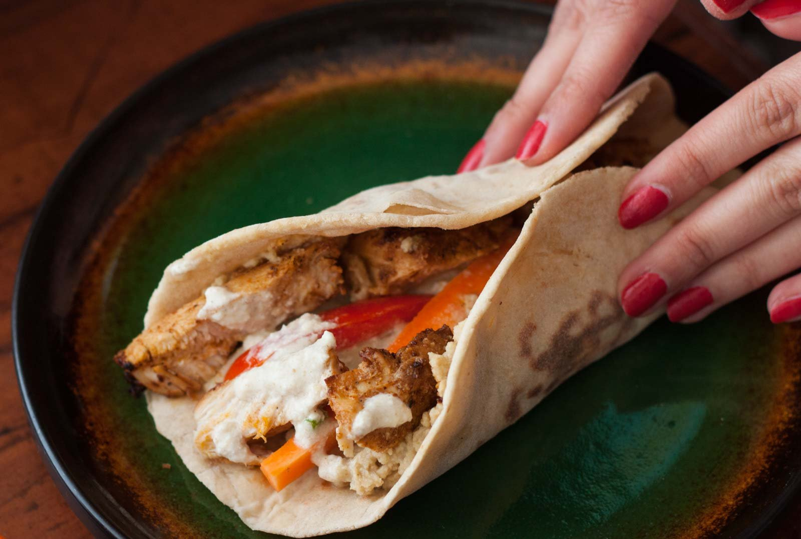

Shawarma

Some fun facts about shawarma
Shawarma normally is a juicy sandwich-like wrap made of grilled lamb, chicken, beef, turkey and other meat varieties. It is a fast food usually eaten with pickled vegetables
Shawarma is an Arabic dish, most precisely a bread wrap resembling a sandwich with a filling of meat like turkey, chicken, goat, beef or lamb or a mixture of meat and vegetables
Some Ingredients
- Chicken
- Onion
- Garlic
- Black pepper
- Paprika
How to make
- Mix marinade. For convenience, just mix the marinade directly in a ziplock bag
- Add chicken into the marinade. Seal the bag, removing excess air, then massage to coat from the outside
- Cook chicken either on the stove or on the BBQ
- Pile everything on a platter and let everybody make their own wraps